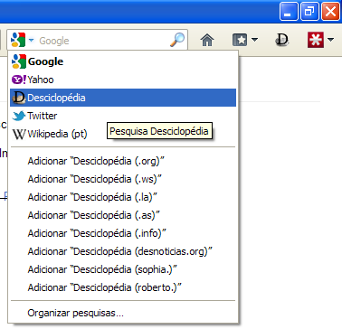

Adicionar busca
Para adicionar a busca na Desciclopédia/DescicloApp na barra de buscas do Firefox siga essas instruções:
1. Nessa página mesmo, clique no ícone ali na barra de busca, normalmente o do Google.
2. Escolha seu domínio favorito.
3. Pronto :)
